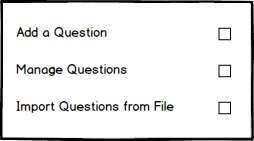
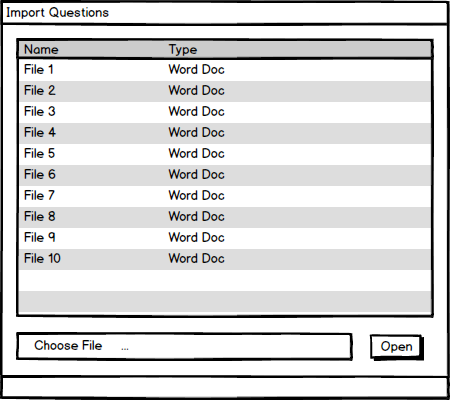
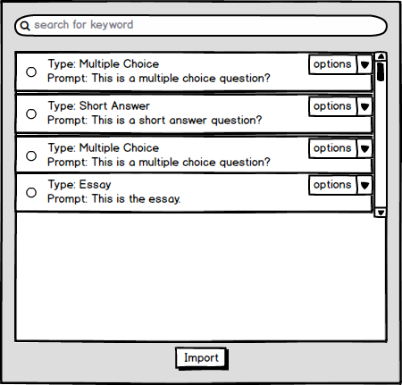
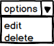
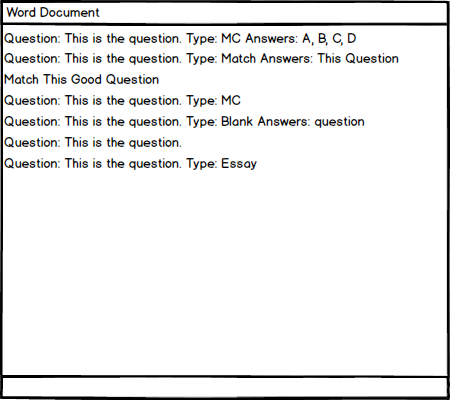

This introductory scenario shows a teacher how to import questions from a file. This is a useful feature for teachers who already have a document with many questions and wish to insert the questions into their question banks without the hastle of inputting each question individually. Teachers do not need to have any questions in their question bank to use this feature, which means all questions may be generated through this import feature.
To import questions from a document, the user chooses the Import Questions
option from the menu page under the Question Manager
popup menu. After clicking on the import option, the user is brought to the import question page from which the user may select a file to import the questions from as shown in Figure 2.

Figure 1: Question Manager menu
Choose Filebutton, a file selection screen will popup in another window which will allow the user to select the file from which to import the questions from.

Figure 2: Import Menu.
Simply select the correct file by going to the proper directory containing the file and highlight the file. After the file has been highlighted by clicking on it, press open to begin the file import process. After a few moments, the question import process will be complete and the questions will appear in the same window in list format. If the questions do not import properly, the user may reselect the file and import the file again. If the file fails again, check the format of the text of the file and be sure it follows the advised format displayed in Figure 5 at the bottom of this page.
The user may choose which questions to be added to the question bank. These imported questions are available for any test in the future. Teachers may also edit the questions from the Question Manager
if corrections need to be made.
From this screen, the user may also delete or choose multiple questions to import by checking the circles on the left of the questions. After checking the circles by clicking on them, the user will be presented with options to either delete the questions or the user may hit import at the bottom of the window to import the selected questions.

Figure 3: The imported questions as a list which you may import.
From this page, the user may select additional options from the dropdown menu to either edit the question or delete the question as shown in Figure 4. By clicking on edit, the user can make changes to any of the fields of the question, including changing the prompt, difficulty, time limit, etc. Deleting a question from this import option means the is not included in the final list of questions to be imported once the "import" button is clicked.
To see how to edit a question see Section 2.2.2.3. To see how to delete a question in more detail see Section 2.2.2.2.
Once the import button is clicked, the user will be redirected to the question bank page where the user may view all generated questions and manage their questions.

Figure 4: Option menu after importing questions
In order for questions to be imported properly, be sure to use the correct import format as shown below. In the example, some fields are missing. If fields are missing for the questions in the file, the user will have the opportunity to edit the question before finally importing all of the questions to fill in any of the missing information such as question difficulty or question time. The only required field for the text document, is the question -- all other fields may be filled out in the previously mentioned method.
If any of the questions in the text document are not of the proper format, the file is considered invalid and no questions may be imported from the file until all the questions are formatted correctly.

Figure 5: A document with the correct format to import questions
The import feature does not support multiple file importation, so if the user wishes to import questions from multiple files, repeat the process stated above.